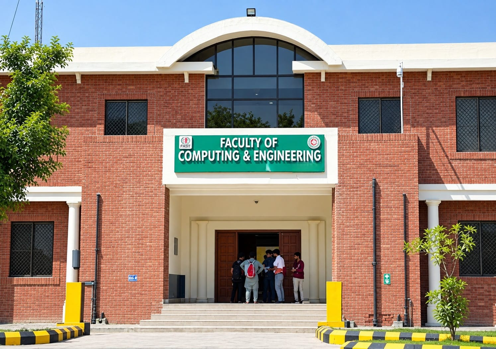

University of Layyah-A Growing Hub
University Of Layyah Campus serves as the primary full-fledged public sector university option in the district with extensive agricultural and degree offerings, whereas Government College University Faisalabad Layyah Campus GCUF Layyah Campus operates as an established regional campus focusing on conventional higher education, and the alternative University of Layyah location along Karor-Layyah Road provides localized accessibility.Would you like to:Check detailed degree programs and faculties availableExplore admission criteria and merit listsInquire about hostel and transport facilities.